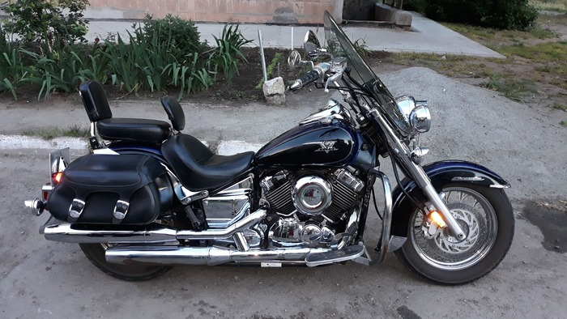
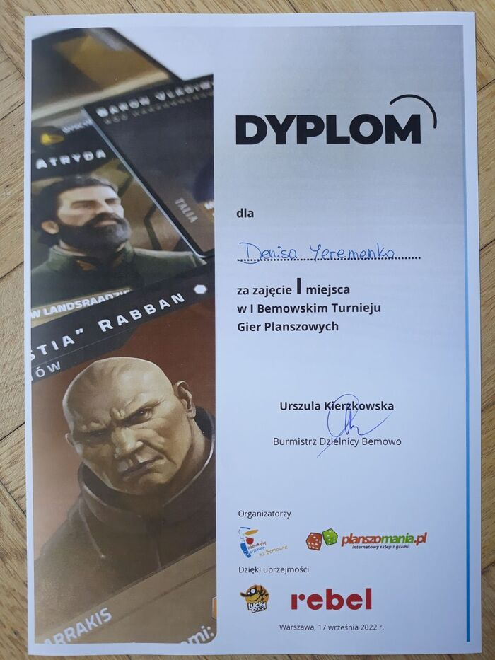

Мои увлечения
У меня много увлечений. Я люблю путешествовать, особенно к морю. Я обожаю море. Люблю физические игры, такие как фубол и настольный теннис (хотя и очень давно не играл). Люблю различные игры, компьютерные, настольные и т.д.
Так как увлечений много хочу рассказать более детально о некоторых из них…
Мотоциклы
Мой мотоцикл – это Ямаха дракстар. Я назвал его Буцефал. Но так как это долго выговаривать и звучит немного пафосно – то я называл его просто Буци.
Вместе мы исколесили округу Мелитополя, посещали байкерские тусовки и собрания. Ну и конечно же просто катались. Моя жена, тоже очень полюбила кататься на мотоцикле, хотя поначалу сильно боялась. Но через некоторое время мотоцикл стал отличным другом и великолепным способом снять любой стресс. И конечно же получить удовольствие от езды.
Настольные игры
Настольные игры я обожал в детстве. Мы часто, в детстве, с папой, а потом с друзьями играли в любые настольные игры, которые были в наличии. Даже сами придумывали, рисовали, а потом играли в эти настольные игры.
В последствии компьютерные игры вытеснили настольные, и я долгое время в них не играл. До тех пор как один мой друг позвал меня в клуб настольных игр. Там мы начали пробывать играть в разные игры и так увлеклись, что я купил известную игру Глумхевен. Кроме того, что это великолепная игра есть еще один удивительный факт. Игра настолько объемная что ее коробка весит 10кг.
Из-за войны я переехал в Варшаву и какое-то время жил там с друзьями. В Варшаве проходил турнир настольных игр, и мы решили поучаствовать. Турнир был по игре Дюна. Мы в нее никогда не играли. Вечером почитали правила, а на следующий день поехали играть. Было 24 участника. Итог турнира - у меня первое место, у моего товарища второе. Было увлекательно. Выиграть у более опытных игроков, ловить на себе удивленные взгляды и вопросы «А вы точно играете в Дюну первый раз?». В общем это была минутка славы! Теперь я могу говорить что я чемпион Варшавы по настольным играм 2022 года :)
